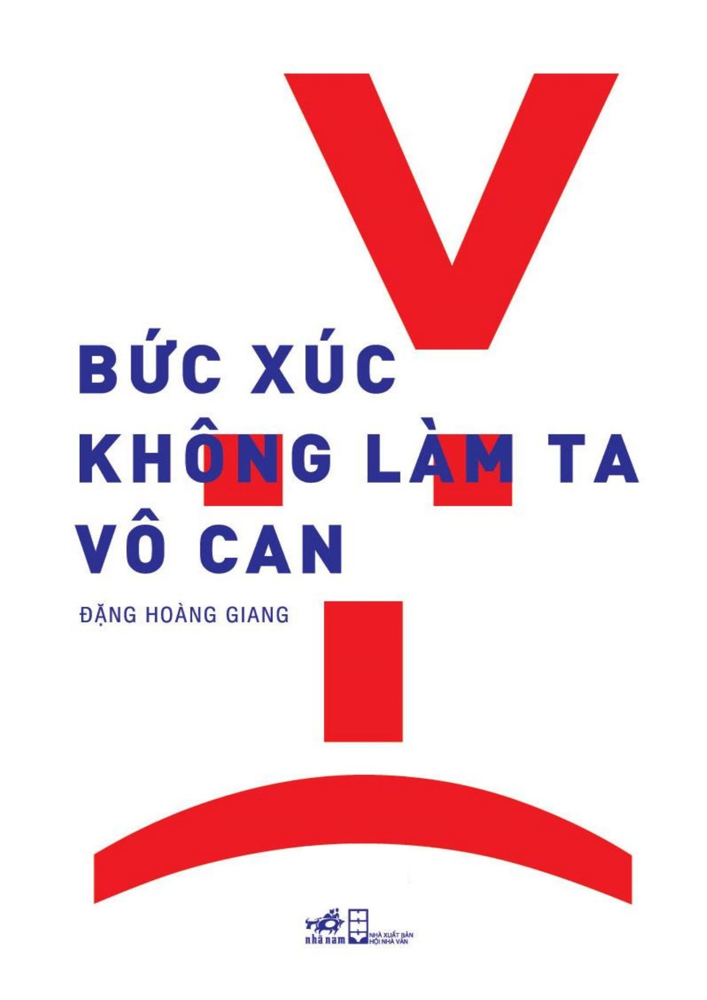

« Back
Bức Xúc Không Làm Ta Vô Can
By Đặng Hoàng Giang

LỜI NÓI ĐẦU:
VẺ ĐẸP CỦA NGƯỜI ĐỨNG MỘT MÌNH:
LẠI CHUYỆN BIA, THỊT CHÓ VÀ ẤN ĐỀN TRẦN
3 TỈ LÍT BIA
5 TRIỆU CON CHÓ
500.000 ẤN ĐỀN TRẦN
“SỐNG CHUNG VỚI LŨ” VÀ CHỦ NGHĨA ANH HÙNG THƯỜNG NHẬT
NGƯỜI NGHÈO KHÔNG CÓ LỖI
BỨC XÚC KHÔNG LÀM TA VÔ CAN
CƠ THỂ GIẢ, KHÁT VỌNG THẬT
BI KỊCH CỦA SỰ HÀO NHOÁNG
VẺ ĐẸP CỦA NGƯỜI ĐỨNG MỘT MÌNH
RỒI TẤT CẢ SẼ TRỞ THÀNH ĐỒ SƠN
CHÊNH LỆCH GIÀU NGHÈO QUÁ MỨC CÓ HẠI CHO TĂNG TRƯỞNG KINH TẾ
CHÊNH LỆCH GIÀU NGHÈO QUÁ MỨC ĂN MÒN HỆ THỐNG CHÍNH TRỊ
CHÊNH LỆCH GIÀU NGHÈO QUÁ MỨC PHÁ HỦY GẮN KẾT XÃ HỘI
“NHỮNG NGƯỜI KHỐN KHỔ” Ở TIÊN LÃNG
TỬ TÙ SINH CON: QUYỀN HAY ĐẶC ÂN?
ĐỪNG “LÀM GIÀU TRƯỚC, DỌN DẸP THIỆT HẠI SAU” !
VĂN HÓA KHÔNG PHẢI LÝ DO KHIẾN QUỐC GIA THẤT BẠI
RỒI TẤT CẢ SẼ TRỞ THÀNH ĐỒ SƠN
TỪ THIỆN CÂU LIKE
SỰ KHỐN CÙNG CỦA TƯ DUY TRIỆU PHÚ
NGÓ MỸ, DÒM NHẬT, HÓNG DO THÁI: LỰA CHỌN NÀO CHO TA?
NHỮNG “HIỂM HỌA” BẤT NGỜ KHI GỬI CON ĐI DU HỌC
BÀN VỀ TRIỂN LÃM BOM TẤN: MONA LISA ĐẸP HAY VÁY CHỊ ĐẸP?
TÌM LẠI CƠ THỂ
TÔN THỜ SÁCH LÀ MÊ TÍN DỊ ĐOAN
KHI LOUIS XIV VỀ LÀNG
QUẲNG GÁNH LO ĐI VÀ XEM TRUYỀN HÌNH THỰC TẾ
THAY CHO GIỚI THIỆU TÁC GIẢ(1)
BI THƯƠNG NGƯỢC DÒNG CHẢY THÀNH SÔNG
VẺ ĐẸP CỦA NGƯỜI CHẠY MARATHON VỀ CHÓT
CÁI TÁT HỮU HÌNH CỦA BÀN TAY VÔ HÌNH
THỊ TRƯỜNG KHÔNG ĐẾM XỈA TỚI MÔI TRƯỜNG
THỊ TRƯỜNG LÃNG QUÊN NGƯỜI NGHÈO
THỊ TRƯỜNG LÀM THA HÓA TRUYỀN THÔNG VÀ BÁO CHÍ
THỊ TRƯỜNG CẢN TRỞ SÁNG TẠO
THỊ TRƯỜNG COI TẤT CẢ LÀ HÀNG HÓA
SỰ TRỖI DẬY CỦA TƯ DUY PHONG KIẾN VÀ BẢO THỦ